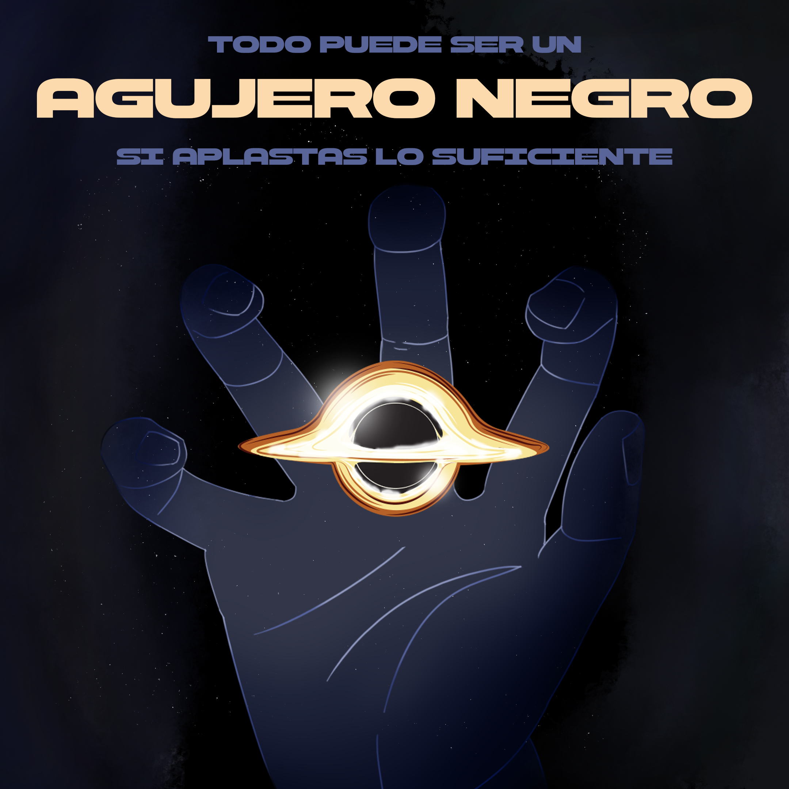
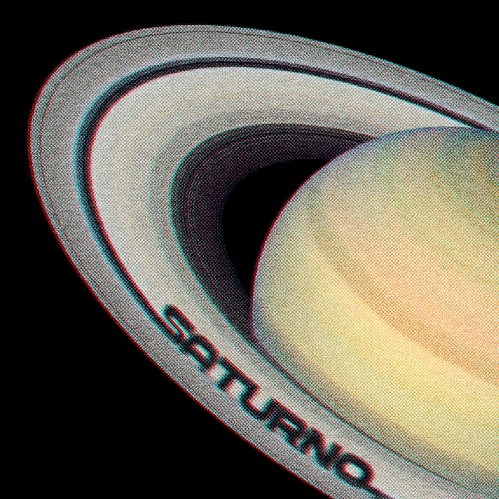
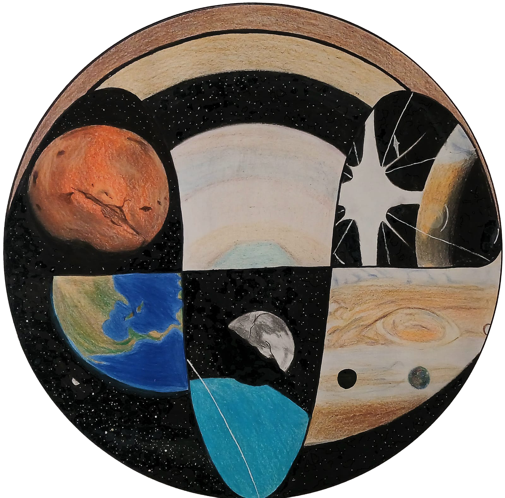

¡PARTICIPAMOS PARA ACERCARTE A LAS ESTRELLAS!
El ser humano avanza muy rápido y lo que hace menos de medio siglo era un enigma, hoy es algo que podemos resolver con papel y un lápiz... para los grandes entendedores, para nosotros son fórmulas abstractas que hacen humear nuestra cabecita, pero cuando nos damos cuenta que, esas fórmulas en realidad son utensilios como formas, colores y texturas, tal como lo que necesitamos para un taller de arte, entonces sabemos que los podemos-
¡DIBUJAR!


